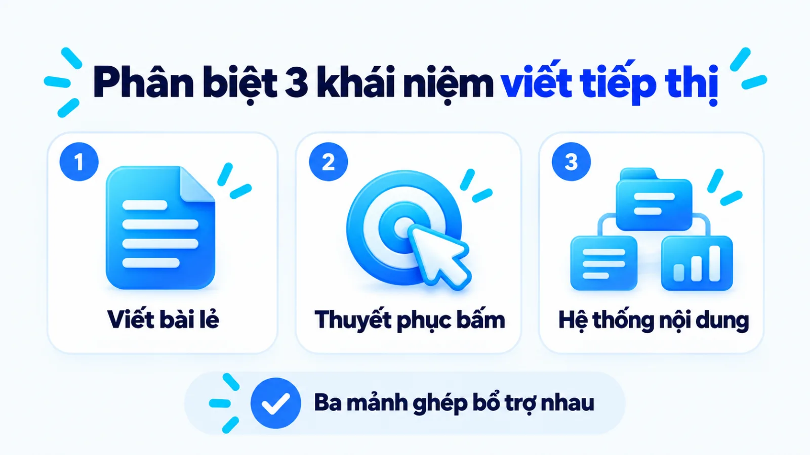
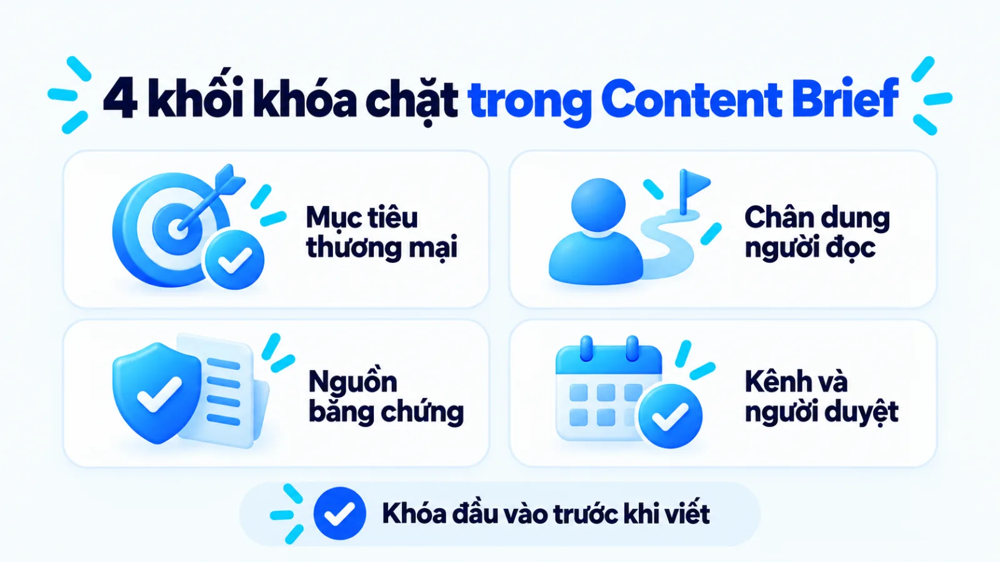
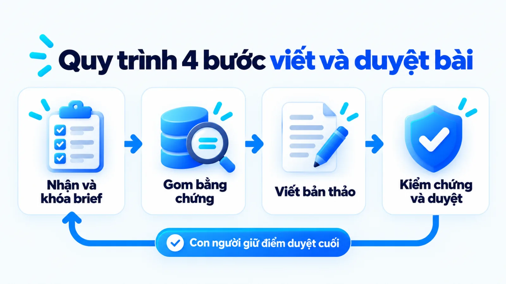
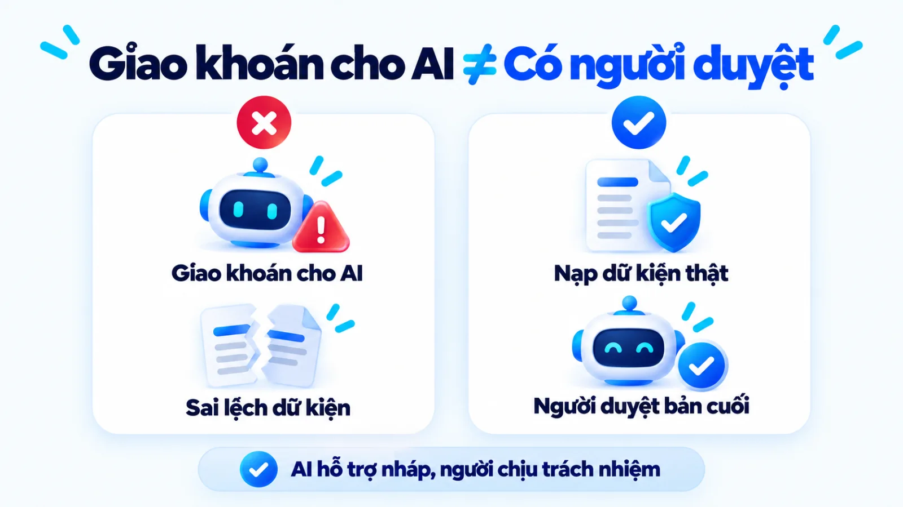
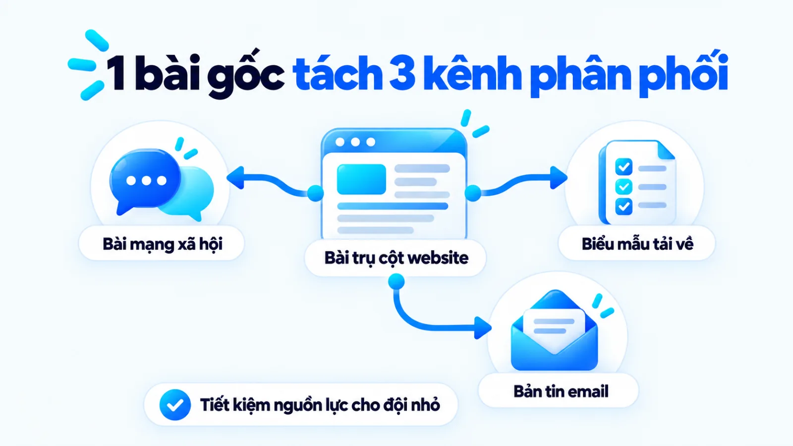
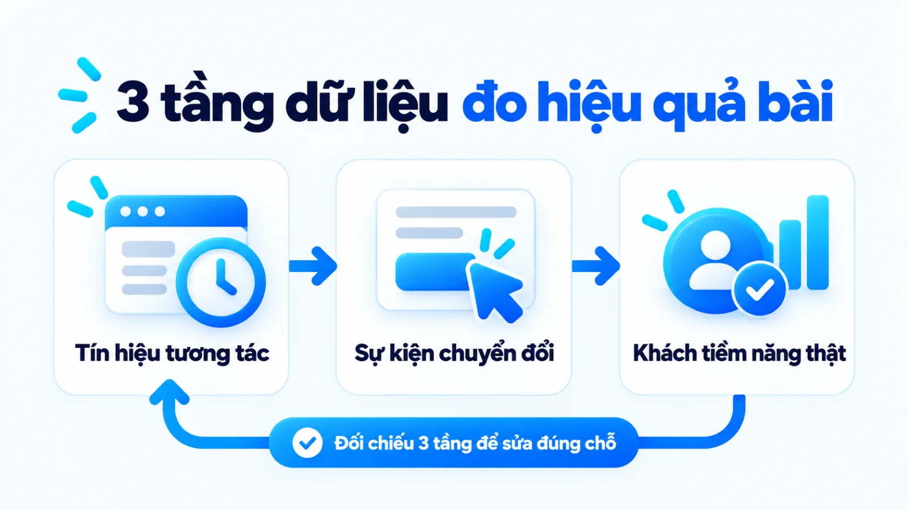

Viết content marketing là gì và quy trình 4 bước
Viết content marketing là hoạt động chuyển hóa mục tiêu kinh doanh và nhu cầu của độc giả mục tiêu thành nội dung có giá trị nhằm dẫn dắt họ thực hiện hành động thương mại. Tại nhiều doanh nghiệp vừa và nhỏ, đội ngũ vẫn đăng bài đều đặn nhưng không tạo được khách hàng tiềm năng vì tách rời việc viết chữ khỏi khâu lập yêu cầu và kiểm chứng bằng chứng. Khi giao bài thiếu giới hạn thông điệp và tiêu chí nghiệm thu, bản thảo dễ rơi vào lối mô tả chung chung thay vì tháo gỡ rào cản mua hàng. Tôi là Lê Tuấn Việt, Marketing Leader tại TAKI Group. Trong bài viết này, tôi làm rõ ranh giới giữa các hình thức viết trong tiếp thị, những điều kiện cần khóa từ lúc nhận đề bài đến khi duyệt đăng và cách đọc dữ liệu để điều chỉnh sát mục tiêu kinh doanh.
- Đăng ngày
- Cập nhật

Tóm tắt nhanh
- Viết content marketing không dừng ở thao tác diễn đạt câu chữ mà là một mắt xích nối từ mục tiêu kinh doanh, nghiên cứu nhu cầu, sản xuất bản thảo đến phân phối và đo lường hành động khách hàng.
- Một bản yêu cầu nội dung (Content Brief) chỉ đủ điều kiện chuyển sang bước viết khi đã chốt rõ hành động mong muốn, giai đoạn hành trình mua, nguồn bằng chứng được phép dùng và người chịu trách nhiệm duyệt cuối.
- Khi nguồn lực sản xuất hạn chế, doanh nghiệp vừa và nhỏ nên dồn sức tạo một nội dung gốc giải quyết trọn vấn đề của người mua rồi tách thành các phiên bản phân phối phù hợp từng kênh.
- Đánh giá hiệu quả bài viết cần tách bạch ba tầng gồm tín hiệu tương tác trên trang, sự kiện chính hoặc khách hàng tiềm năng đạt chuẩn và kết quả doanh thu thực tế trong cùng kỳ đo.
Mục lục bài viết8 phần
Viết content marketing là gì trong marketing?
Viết content marketing là hoạt động chuyển hóa mục tiêu kinh doanh và nhu cầu của một nhóm độc giả xác định thành nội dung có giá trị, phù hợp và nhất quán nhằm dẫn dắt họ thực hiện hành động có lợi cho doanh nghiệp. Hoạt động này nằm trong chuỗi liên hoàn từ lập đề bài, sản xuất, phân phối đến đo lường chuyển đổi.
Theo định nghĩa của Content Marketing Institute (Viện Tiếp thị Nội dung Hoa Kỳ), tiếp thị nội dung tập trung tạo lập và phân phối thông tin hữu ích để thu hút, giữ chân nhóm độc giả rõ ràng, qua đó thúc đẩy hành động mang lại lợi ích kinh doanh thay vì chỉ tạo lượt xem. Trong vận hành của SME (doanh nghiệp vừa và nhỏ), việc viết bài là bước hiện thực hóa chiến lược tại điểm chạm người đọc.
Để tránh nhầm lẫn khi phân công nhân sự hoặc nghiệm thu đầu việc, người phụ trách cần tách bạch ba khái niệm thường bị gọi chung trong phòng tiếp thị. Bảng dưới đây đối chiếu viết content, copywriting (viết quảng cáo thuyết phục) và Content Marketing (tiếp thị nội dung) theo phạm vi, mục tiêu cùng đầu ra cốt lõi.
| Khái niệm | Phạm vi và mục tiêu chính | Đầu ra cần nghiệm thu |
|---|---|---|
| Viết content | Soạn thảo văn bản hoặc kịch bản cung cấp thông tin, giải thích vấn đề hoặc hướng dẫn người đọc tại một điểm chạm | Bản thảo hoàn chỉnh, rõ nghĩa, đúng chủ đề và khớp định dạng của kênh đăng tải |
| Copywriting | Chế tác thông điệp ngắn gọn, sắc bén nhằm thuyết phục người đọc thực hiện ngay một hành động thương mại cụ thể | Câu tiêu đề, mẫu quảng cáo, nội dung trang đích (landing page) hoặc lời kêu gọi hành động |
| Content Marketing | Quản trị toàn bộ hệ thống từ nghiên cứu nhu cầu, lập kế hoạch, sản xuất, phân phối đến đo lường hiệu quả kinh doanh | Tài sản nội dung tích lũy uy tín, lưu lượng truy cập đạt chuẩn và tỷ lệ chuyển đổi theo phễu |
Bảng đối chiếu trên phân tách các khái niệm theo chức năng công việc để dễ kiểm soát chất lượng, không nhằm đóng khung thành ba vị trí nhân sự tách biệt. Tại các doanh nghiệp nhỏ, một nhân sự thường đảm nhiệm cả việc viết bài giải thích lẫn viết mẫu quảng cáo, miễn là họ phân biệt rõ mục tiêu của từng bản thảo đang thực hiện.

Phân biệt viết content, copywriting, Content Marketing
Điểm làm nhiều đội ngũ lúng túng không nằm ở tên gọi mà ở việc dùng sai thước đo cho từng loại bài. Nếu áp tiêu chí chốt đơn tức thì của copywriting vào bài hướng dẫn giải quyết vấn đề, câu chữ sẽ trở nên gượng ép và mất tính khách quan. Ngược lại, nếu trang dịch vụ chỉ liệt kê khái niệm chung như bài thông tin thuần túy, người đọc sẽ rời đi vì không thấy giải pháp có gì khác biệt.
Trong một hệ thống nền tảng Content Marketing hoàn chỉnh, hoạt động viết content đóng vai trò xây dựng sự hiểu biết và niềm tin qua từng chặng tìm kiếm, còn kỹ thuật copywriting xuất hiện ở các nút thắt chuyển tiếp để thúc đẩy quyết định. Hai kỹ năng này bổ trợ trực tiếp cho nhau bên trong cùng một kế hoạch quản trị nội dung.
Đầu vào và đầu ra của một nội dung phục vụ marketing
Tại sao nhiều doanh nghiệp xuất bản hàng chục bài viết mỗi tháng nhưng đội bán hàng vẫn phản ánh khách liên hệ không đúng tệp? Nguyên nhân thường bắt nguồn từ việc coi hoạt động làm content marketing chỉ là giao một tiêu đề rồi chờ nhận lại một tệp văn bản đủ số chữ. Một nội dung phục vụ tiếp thị chỉ vận hành đúng cơ chế khi nối chặt đầu vào chiến lược với đầu ra hành vi.
Đầu vào bắt buộc của người viết không phải là cảm hứng cá nhân mà là bài toán kinh doanh của kỳ đó, câu hỏi thực tế của khách hàng mục tiêu và kho dữ kiện đã kiểm chứng. Đầu ra cần nghiệm thu cũng không dừng ở văn bản trôi chảy, mà phải gồm lập luận tự đủ ngữ cảnh, bằng chứng minh bạch và bước đi tiếp theo rõ ràng cho người đọc. Viết chữ chưa phải là làm marketing.
Brief trước khi viết content marketing cần gì?
Một bản mô tả yêu cầu nội dung (Content Brief) đạt chuẩn trước khi bắt đầu viết content marketing phải khóa rõ mục tiêu kinh doanh, hành động mong muốn từ người đọc, giai đoạn hành trình mua, nguồn bằng chứng được phép dùng và người duyệt cuối. Bốn nhóm thông tin bắt buộc trong một brief hoàn chỉnh được tóm lược dưới đây.
- Mục tiêu và hành động đích: Bài viết phục vụ chỉ tiêu thương mại nào trong quý và cần người đọc thực hiện bước tiếp theo là gì sau khi đọc xong.
- Chân dung và ngữ cảnh đọc: Ai là người đọc trực tiếp, họ đang vướng quyết định gì và bài chọn góc tiếp cận nào.
- Bằng chứng và ranh giới: Số liệu, tài liệu nguồn nào được phép trích dẫn và cam kết quá đà nào bị cấm.
- Kênh đăng và người nghiệm thu: Nội dung sẽ xuất hiện ở định dạng nào, tuân theo quy chuẩn giọng điệu ra sao và ai giữ quyền duyệt xuất bản.

Mục tiêu kinh doanh và hành động mong muốn
Một yêu cầu viết bài chỉ ghi từ khóa và độ dài sẽ đẩy rủi ro định hướng sang cho người viết. Trước khi mở trang nháp, người giao bài phải chỉ rõ nội dung này hỗ trợ nhóm sản phẩm nào, giúp lọc tệp khách hàng ra sao hoặc giải đáp rào cản nào mà đội tư vấn đang lặp lại mỗi ngày. Khi mục tiêu kinh doanh được neo chặt, người viết sẽ biết phần nào cần đào sâu và phần nào nên cắt bỏ.
Người đọc, vấn đề và giai đoạn hành trình
Người mới tìm hiểu khái niệm cần cách giải thích khác hẳn với chủ doanh nghiệp đang so sánh các phương án đầu tư. Vì vậy, brief phải xác định rõ người đọc đang ở tầng nhận biết, cân nhắc hay quyết định để chọn cách xác định content angle (góc tiếp cận nội dung) sắc nét. Thay vì viết một bài bao thầu mọi đối tượng, việc khóa đúng một góc quyết định giúp bài viết giữ được mật độ thông tin cao.
Thông điệp, bằng chứng và giới hạn được phép viết
Trong bộ câu hỏi tự đánh giá chất lượng nội dung năm 2024, Google Search Central nhấn mạnh việc kiểm tra xem bài viết có cung cấp thông tin gốc, báo cáo hoặc phân tích thực chất thay vì chỉ tóm tắt nguồn có sẵn hay không. Muốn đạt chuẩn này, brief phải cấp sẵn tài liệu nguồn, thông số sản phẩm và phạm vi dữ liệu khách hàng được phép sử dụng để người viết không tự suy diễn số liệu.
Xét một ví dụ biên tập, không phải kết quả khách hàng thật: một đơn vị phần mềm quản lý kho tại Hà Nội cần viết bài hướng dẫn kiểm kê hàng tồn cho chủ cửa hàng tạp hóa quy mô nhỏ. Trong brief, người phụ trách quy định bài viết chỉ dùng dữ liệu từ tài liệu nghiệp vụ kho của công ty, cấm hứa hẹn phần mềm xóa sổ hoàn toàn thất thoát và mời tải mẫu bảng kiểm kê ở cuối bài.
Kênh phân phối và người duyệt cuối
Mỗi kênh có đặc thù hiển thị và nhịp đọc riêng, nên brief cần chốt ngay từ đầu đây là bài trụ trên website, bản tin thư điện tử hay kịch bản chuyển thể. Bản yêu cầu cũng phải gắn kèm quy chuẩn brand voice và tone of voice (giọng thương hiệu và sắc thái biểu đạt) cùng người duyệt chuyên môn cuối. Thiếu người duyệt hiểu sản phẩm, bản thảo rất dễ sai lệch về cam kết dịch vụ.
Quy trình 4 bước viết content marketing
Quy trình viết content marketing từ lúc nhận yêu cầu đến khi có bản thảo được duyệt gồm bốn bước tuần tự: giải mã brief để chốt câu trả lời chính, nghiên cứu bằng chứng gốc, lập cấu trúc nháp dễ đọc quét và biên tập xác thực trước nghiệm thu. Sơ đồ và chi tiết bốn bước thực hiện cùng đầu ra bắt buộc được trình bày dưới đây.
- IGiải mã briefChốt câu hỏi trung tâm của người đọc và câu trả lời trực tiếp dự kiến với người giao bài.
- IINghiên cứu nguồnThu thập tài liệu chính thức, số liệu có phạm vi đo và góc nhìn vận hành thực tế.
- IIILập cấu trúc và nhápDựng khung tiêu đề phân cấp, đặt đáp án lên đầu mỗi mục và trình bày công cụ quyết định.
- IVBiên tập và nghiệm thuKiểm tra chéo từng khẳng định, rà giọng thương hiệu và duyệt bản cuối bởi con người.

Bước 1: Giải mã brief và chốt câu trả lời chính
Ngay khi nhận Content Brief, người viết cần tóm tắt lại câu hỏi lớn nhất của người đọc và viết thử câu trả lời trực tiếp trong một hoặc hai câu để thống nhất với người giao bài trước khi viết dài. Thao tác đối chiếu sớm này giúp hai bên phát hiện ngay độ lệch về góc tiếp cận hoặc đối tượng mục tiêu, tránh tình trạng viết xong hàng nghìn chữ mới nhận ra bài đi chệch bài toán kinh doanh.
Đầu ra: luận điểm trung tâm, câu trả lời mở bài dự kiến và khung tiêu đề chính đã được người phụ trách xác nhận.
Bước 2: Nghiên cứu nhu cầu cùng nguồn bằng chứng
Từ luận điểm đã chốt, người viết thu thập tài liệu gốc, báo cáo có ghi rõ năm và phạm vi mẫu, đồng thời tổng hợp vướng mắc thực tế từ bộ phận bán hàng. Theo hướng dẫn năm 2024 của Google Search Central, hệ thống xếp hạng tự động luôn ưu tiên thông tin hữu ích, đáng tin cậy được tạo ra vì lợi ích của người đọc trước tiên thay vì nhằm thao túng công cụ tìm kiếm.
Đầu ra: sổ dữ kiện liệt kê các khẳng định quan trọng kèm đường dẫn URL nguồn gốc, năm công bố và giới hạn áp dụng, được biên tập viên hoặc quản lý kiểm tra trước khi lập dàn ý.
Bước 3: Lập cấu trúc và hoàn thiện bản nháp
Dựa trên sổ dữ kiện, người viết dựng bản nháp từ tổng quát đến cụ thể: mở mục bằng câu trả lời tự đủ ngữ cảnh, rồi giải thích cơ chế, đưa bảng đối chiếu và điều kiện áp dụng. Theo nghiên cứu thực nghiệm năm 1997 của Nielsen Norman Group trên nhóm người dùng thử nghiệm, độc giả web hiếm khi đọc từng chữ tuần tự mà thường quét mắt tìm điểm neo như tiêu đề phụ, danh sách và bảng biểu.
Khác biệt giữa bản thảo hời hợt và bản thảo thuyết phục nằm ở độ cụ thể của điều kiện thực thi. Thay vì viết chung chung "Cần tối ưu nội dung chất lượng để thu hút khách hàng", hãy chỉ rõ: "Đặt câu trả lời cốt lõi ngay dưới tiêu đề phụ và kèm bảng phân biệt tiêu chí để người đọc quét trang vẫn nắm được ý chính" (ví dụ biên tập, không phải kết quả khách hàng thật).
Đầu ra: bản thảo hoàn chỉnh có cấu trúc tiêu đề rõ nghĩa, đoạn mở mục trả lời thẳng và đầy đủ bảng hoặc danh sách hỗ trợ quyết định, được người giao bài rà soát cấu trúc trước khi chuyển sang biên tập chi tiết.
Bước 4: Biên tập, xác thực và nghiệm thu
Ở chặng cuối, biên tập viên hoặc quản lý marketing kiểm tra chéo từng con số với nguồn gốc, cắt bỏ câu sáo rỗng và rà soát độ khớp với giọng thương hiệu. Trong hướng dẫn chính thức tháng 2/2023 về nội dung có AI hỗ trợ, Google Search Central khẳng định dù sản xuất bằng phương thức nào, điều kiện để đạt hiệu quả tìm kiếm vẫn là tính nguyên bản, chất lượng cao và phục vụ người đọc trước tiên.
Tôi chỉ coi AI là trợ lý xử lý nháp khi có dữ liệu đầu vào chuẩn, còn con người luôn giữ khâu xác thực nguồn và duyệt cuối. Tại Công ty Cổ phần PITO (tháng 11/2022 đến tháng 8/2024), khi lập kế hoạch và triển khai trung bình 60 bài viết SEO mỗi tháng đạt 7.200 lượt truy cập tự nhiên hàng tháng, kỷ luật chuẩn hóa cấu trúc và kiểm duyệt đầu ra giúp đội ngũ giữ chất lượng đồng đều.
Đầu ra: bản thảo đã xác thực toàn bộ dữ kiện, gắn đủ liên kết ngữ cảnh, đúng giọng thương hiệu và được người có thẩm quyền duyệt xuất bản.

Cách chọn định dạng và kênh khi ít nguồn lực
Khi nguồn lực sản xuất hạn chế, doanh nghiệp vừa và nhỏ nên tập trung tạo một nội dung gốc có chiều sâu giải quyết trọn vấn đề của khách hàng, sau đó tách nhỏ thành các phiên bản phân phối phù hợp với đặc thù từng kênh. Bảng dưới đây giúp người phụ trách chọn định dạng theo điều kiện nguồn lực và sự đánh đổi vận hành.
| Định dạng lựa chọn | Phù hợp khi doanh nghiệp có | Đánh đổi và điểm cần lưu ý |
|---|---|---|
| Bài chuyên sâu trên web | Sản phẩm cần giải thích kỹ cơ chế, chu kỳ cân nhắc mua dài và có người hiểu chuyên môn | Tốn thời gian nghiên cứu ban đầu và cần chu kỳ tích lũy trước khi tạo lưu lượng tự nhiên ổn định |
| Bài ngắn mạng xã hội | Nhu cầu kiểm tra nhanh phản ứng thị trường với góc thông điệp mới hoặc duy trì tương tác | Vòng đời hiển thị ngắn, khó trình bày trọn vẹn lập luận phức tạp nếu thiếu trang đích hứng lưu lượng |
| Tài liệu mẫu và bảng tính | Khách hàng mục tiêu cần công cụ thực hành ngay và doanh nghiệp muốn thu thập thông tin liên hệ | Đòi hỏi năng lực đúc kết quy trình thực chất; nếu tài liệu sơ sài sẽ làm giảm uy tín thương hiệu |
| Bản tin thư điện tử | Tệp dữ liệu khách hàng tiềm năng đã đăng ký hợp lệ và cần nuôi dưỡng niềm tin định kỳ | Phụ thuộc vào chất lượng danh sách người nhận và kỷ luật gửi bài đều đặn, đúng cam kết |
Bảng chọn trên áp dụng cho giai đoạn doanh nghiệp cần tối ưu hiệu suất trên từng giờ làm việc của nhân sự; mức độ ưu tiên có thể thay đổi khi doanh nghiệp mở rộng ngân sách quảng cáo trả phí cho từng chiến dịch ngắn hạn.
Nội dung gốc và các phiên bản phân phối
Sai lầm dễ làm cạn sức đội ngũ nhỏ là cố sáng tạo nội dung mới hoàn toàn cho từng kênh mỗi ngày. Thay vào đó, tôi ưu tiên lấy một bài viết trụ cột trên website hoặc tài liệu hướng dẫn sâu làm hạt nhân tri thức đã kiểm chứng kỹ. Từ tài sản gốc này, nhân sự có thể tách bảng so sánh thành ảnh trượt mạng xã hội, rút phần tóm tắt thành kịch bản video ngắn hoặc chuyển quy trình thành thư điện tử.
Trở lại tình huống đơn vị phần mềm quản lý kho tại Hà Nội (ví dụ biên tập, không phải kết quả khách hàng thật), đội ngũ chỉ có một nhân sự phụ trách nội dung. Thay vì dàn trải nhiều kênh, doanh nghiệp chọn viết định kỳ bài hướng dẫn nghiệp vụ kho chuyên sâu kèm biểu mẫu tải về trên website làm nội dung gốc, rồi tách các lỗi kiểm kê phổ biến thành bài đăng ngắn trên Facebook để dẫn về trang đích.

Đánh đổi giữa độ sâu, tốc độ và năng lực vận hành
Mọi quyết định chọn kênh trong chuyên mục Marketing đều đi kèm sự đánh đổi giữa tốc độ tiếp cận ngắn hạn và giá trị tích lũy dài hạn. Bài ngắn trên mạng xã hội tạo tương tác nhanh nhưng trôi đi sau vài ngày, còn bài chuẩn tìm kiếm trên website cần thời gian lập chỉ mục nhưng đón đúng người đang tra cứu giải pháp. Doanh nghiệp chỉ nên mở kênh mới khi đã giữ vững lịch đăng ở kênh trụ cột.
Cách viết lời kêu gọi hành động theo phễu
Lời kêu gọi hành động (CTA, Call to Action) trong viết content marketing phải khớp với mức độ sẵn sàng của người đọc ở từng giai đoạn: đề xuất bước tìm hiểu nhẹ ở tầng nhận biết, cung cấp công cụ đối chiếu ở tầng cân nhắc và mời hành động thương mại trực tiếp ở tầng quyết định. Ba cấp độ thiết kế CTA theo hành trình khách hàng gồm các mục sau.
- Giai đoạn nhận biết: Mời người đọc xem tiếp bài phân tích chuyên sâu liên quan, lưu bảng kiểm tra nhanh hoặc đăng ký nhận bản tin định kỳ.
- Giai đoạn cân nhắc: Dẫn người đọc sang bảng tiêu chí lựa chọn giải pháp, khung ước tính chi phí vận hành hoặc hồ sơ tình huống thực tế.
- Giai đoạn quyết định: Nêu rõ đầu ra người đọc nhận được khi gửi yêu cầu tư vấn, đăng ký dùng thử hoặc đặt lịch rà soát bài toán riêng.
Hành động ở giai đoạn nhận biết
Ở chặng đầu, người đọc mới dừng ở việc tìm hiểu nguyên nhân vấn đề nên chưa đủ cơ sở để mua hàng ngay. Theo phân loại công bố năm 2013 của Nielsen Norman Group, chuyển đổi vi mô gồm cột mốc quy trình và hành động phụ trợ báo hiệu tiềm năng tiến tới chuyển đổi chính. Vì vậy, lời kêu gọi ở bài nhận biết nên hướng vào micro conversion của nội dung như đọc bài kế tiếp hoặc tải bảng kiểm nhanh.
Hành động ở giai đoạn cân nhắc
Bước sang giai đoạn cân nhắc, người đọc đã hiểu bản chất vấn đề và bắt đầu đặt các phương án giải quyết lên bàn cân. Lời kêu gọi hành động lúc này cần đóng vai trò công cụ giảm rủi ro quyết định: mời họ xem bảng đối chiếu điều kiện áp dụng, tải mẫu tính ngân sách hoặc đọc phân tích dự án cùng ngành. Một CTA tốt ở tầng cân nhắc giúp người đọc tự xác định phương án khớp với nguồn lực hiện tại.
Hành động ở giai đoạn quyết định
Tại sao nhiều bài đặt nút đăng ký tư vấn rất lớn ở cuối bài nhưng tỷ lệ bấm vẫn thấp? Rào cản nằm ở chỗ câu mời chỉ đưa mệnh lệnh như "Liên hệ ngay hôm nay" mà không nêu rõ người đọc nhận được gì khi để lại thông tin. Ở tầng quyết định, CTA hiệu quả phải gọi đúng điểm nghẽn và cam kết rõ đầu ra buổi trao đổi đầu tiên, như rà soát quy trình hoặc đối chiếu bảng giá.
Cách đo và điều chỉnh content marketing
Đo lường hiệu quả viết content marketing cần tách bạch ba tầng dữ liệu gồm tín hiệu tiếp cận và tương tác trên trang, các sự kiện chính hoặc khách hàng tiềm năng đạt chuẩn, và kết quả kinh doanh thực nhận để biết chính xác khâu nào cần điều chỉnh. Bảng dưới đây phân bổ chỉ số từ Google Search Console, GA4 (Google Analytics 4, công cụ phân tích website của Google) cùng giới hạn khi đọc theo ba tầng.
| Tầng dữ liệu đo | Chỉ số và nguồn ghi nhận | Giới hạn khi đọc và điều chỉnh |
|---|---|---|
| Tương tác trên trang | Lượt hiển thị, tỷ lệ nhấp và phiên tương tác trên Google Search Console cùng hệ thống GA4 | Cho biết sức hút của tiêu đề và bố cục bài, nhưng chưa chứng minh người đọc có nhu cầu mua |
| Hành vi đạt chuẩn | Số sự kiện chính (key event) như tải biểu mẫu, nhấp liên hệ trên GA4 và CRM (quản trị quan hệ khách hàng) | Phản ánh hiệu quả dẫn dắt của nội dung và CTA, cần lọc tiếp tỷ lệ thông tin liên hệ hợp lệ |
| Doanh thu xác nhận | Số khách hàng tiềm năng đạt chuẩn, CPL (chi phí trên một khách hàng tiềm năng) và doanh thu chốt đơn thực tế | Chịu ảnh hưởng đồng thời của giá bán, năng lực tư vấn chốt đơn và uy tín thương hiệu chung |
Khung đo lường ba tầng trên cần được đọc theo cùng một kỳ đánh giá và đối chiếu với độ dài chu kỳ mua hàng thực tế của từng ngành, tránh kết luận vội vàng chỉ sau vài ngày đăng bài.
Tín hiệu tiếp cận và tương tác
Ở tầng đầu, chỉ số hiển thị và tương tác cho biết bài viết đã giữ chân được người đọc hay chưa. Theo tài liệu cập nhật năm 2024 của Google Analytics Help về tỷ lệ tương tác, một phiên tương tác (engaged session) trong GA4 được tính khi kéo dài từ 10 giây trở lên, có từ 1 sự kiện chính hoặc từ 2 lượt xem trang. Nếu tỷ lệ này thấp, bạn cần sửa lại đoạn mở đầu và tiêu đề phụ.
Lead hoặc hành vi đạt chuẩn
Đi qua tầng đọc hiểu, bài viết phải thúc đẩy được hành động trung gian có ý nghĩa thương mại. Tài liệu chính thức cập nhật năm 2024 của Google Analytics Help về sự kiện chính định nghĩa key event là sự kiện đo lường hành động đặc biệt quan trọng với thành công của doanh nghiệp. Khi người đọc xem hết bài nhưng không tạo sự kiện chính nào, điểm nghẽn thường nằm ở CTA lệch tầng phễu hoặc biểu mẫu quá rườm rà.
Kết quả kinh doanh đã xác nhận
Ở tầng cuối cùng, dữ liệu nội dung phải nối với hệ thống quản lý khách hàng để kiểm tra tỷ lệ chuyển thành người mua thật. Trong dự án cố vấn Marketing cho Hệ thống Y Đa khoa TOMEC (tháng 8/2025 đến tháng 8/2026) do tôi phụ trách, hoạt động tối ưu Performance gắn với theo dõi sát các chỉ số chuyển đổi đã giúp tăng 40% khách hàng tiềm năng và giảm 54% CPL, từ 1,2 triệu xuống 550.000 đồng mỗi data.
Giới hạn khi quy kết kết quả cho nội dung
Khi đọc báo cáo, người phụ trách không nên quy kết toàn bộ thành bại của đơn hàng cho một bài viết đơn lẻ. Khách hàng có thể đọc bài trên web, gửi đường dẫn qua tin nhắn riêng cho đồng nghiệp rồi vài tuần sau mới tìm tên thương hiệu để liên hệ, tạo ra giới hạn đo lường từ dark social (chia sẻ qua kênh riêng tư khó theo dõi nguồn). Quyết định điều chỉnh cần kết hợp cả ba tầng dữ liệu.
Cụ thể, người phụ trách nên sửa lại phần mở bài hoặc CTA khi bài đã hiển thị đúng từ khóa mục tiêu nhưng tỷ lệ tương tác còn thấp. Ngược lại, nếu bài viết sâu nhưng đặt ở kênh vắng khách hàng mục tiêu thì cần đổi kênh phân phối. Doanh nghiệp chỉ nên dừng hẳn một hướng chủ đề khi qua nhiều kỳ đo liên tiếp, nhóm bài đó chỉ hút lượt xem chung chung mà không tạo ra sự kiện chính hay khách tiềm năng nào.

Câu hỏi thường gặp về viết content marketing
Chưa có chiến lược tổng thể thì bắt đầu viết từ đâu?
Doanh nghiệp nên bắt đầu từ nhóm câu hỏi thực tế mà khách hàng thường hỏi bộ phận bán hàng trước khi ra quyết định mua. Với mỗi câu hỏi, người phụ trách lập một bản yêu cầu gọn gồm chân dung người đọc, câu trả lời cốt lõi, bằng chứng xác thực và một hành động tiếp theo phù hợp. Kết quả tương tác cùng phản hồi thực tế của nhóm bài đầu tiên sẽ là căn cứ để mở rộng thành kế hoạch nội dung dài hạn.
Khi nào doanh nghiệp không nên thuê ngoài người viết bài?
Không nên thuê ngoài khi doanh nghiệp chưa tự lập được bản mô tả yêu cầu nội dung rõ ràng và chưa có người hiểu sản phẩm chịu trách nhiệm duyệt cuối. Doanh nghiệp không thể giao khoán việc xác định mục tiêu kinh doanh, thông điệp cốt lõi hay kiểm chứng dữ kiện chuyên môn cho cộng tác viên bên ngoài. Khi thiếu quy chuẩn giọng thương hiệu và khung nghiệm thu, việc thuê viết số lượng lớn sẽ tốn thời gian sửa hơn tự viết.
Dùng AI hỗ trợ viết content marketing cần khóa điều kiện gì?
Con người bắt buộc giữ vai trò kiểm soát đầu vào và duyệt bản cuối khi đưa công cụ tạo sinh vào quy trình viết bài. Doanh nghiệp chỉ nên dùng AI để gom nhóm ý tưởng, gợi ý cấu trúc hoặc rà soát diễn đạt khi đã có sẵn brief và danh mục nguồn thật. Mọi con số, dẫn chứng chuyên môn và góc nhìn vận hành thực tế phải được người biên tập xác thực chéo để phục vụ người đọc trước tiên.
Bao lâu nên đánh giá và cập nhật lại một bài viết đã đăng?
Người phụ trách nên kiểm tra tín hiệu lập chỉ mục và mức độ tương tác ngay trong tháng đầu sau xuất bản để phát hiện sớm độ lệch so với ý định tìm kiếm. Ở tầng hiệu quả thương mại, việc đánh giá khả năng tạo hành vi đạt chuẩn nên thực hiện theo chu kỳ hàng quý hoặc khi sản phẩm, chính sách giá có thay đổi. Hãy ưu tiên cập nhật những bài có lượt hiển thị tốt nhưng tỷ lệ chuyển tiếp còn thấp.
Vì sao bài viết có nhiều lượt xem nhưng không ra khách hàng?
Nguyên nhân phổ biến nhất là chủ đề bài viết thu hút tệp độc giả tìm hiểu thông tin quá rộng, không khớp với nhóm người mua có nhu cầu dùng sản phẩm của doanh nghiệp. Ngoài ra, bài viết có thể đang thiếu lời kêu gọi hành động khớp giai đoạn nhận thức hoặc ép người đọc mua ngay khi chưa đủ tin cậy. Bạn cần rà soát lại góc tiếp cận trong brief và bổ sung chuyển đổi vi mô để giữ kết nối với người chưa mua.
Làm sao giữ giọng thương hiệu nhất quán khi nhiều người viết?
Doanh nghiệp cần thiết lập tài liệu quy chuẩn giọng thương hiệu quy định rõ cách xưng hô, nguyên tắc giải nghĩa thuật ngữ, cấu trúc mở mục và danh sách từ cấm. Các tiêu chí này cùng quy tắc gắn nhãn minh bạch cho ví dụ giả định phải đưa vào danh sách nghiệm thu bắt buộc ở bước biên tập trước khi đăng. Một quản lý hoặc biên tập viên đầu mối cần giữ quyền duyệt cuối để mọi điểm chạm đều nói cùng một chuẩn mực.
Kết luận
Viết content marketing chỉ thực sự tạo ra tài sản thương mại khi vận hành như một quy trình có kiểm soát từ bản brief khóa rõ mục tiêu, bước nghiên cứu bằng chứng gốc, thiết kế hành động theo tầng nhận thức đến khung đo lường ba tầng. Khác biệt cốt lõi giữa đội ngũ chỉ sản xuất văn bản và hệ thống nội dung tạo chuyển đổi nằm ở kỷ luật nghiệm thu đầu ra tại từng điểm chạm.
Ngay tuần này, bạn hãy rà lại các bài vừa đăng xem mỗi mục đã có câu trả lời thẳng, nguồn kiểm chứng và CTA khớp giai đoạn người đọc hay chưa. Khi cần đồng bộ từ chiến lược chủ đề, mẫu brief, quy trình duyệt có AI hỗ trợ đến bảng đo lường nối với đội bán hàng, doanh nghiệp sẽ cần hệ thống quản trị đồng bộ. Đội ngũ của bạn đang vướng ở khâu giao brief hay bước chuyển đổi khách tiềm năng?